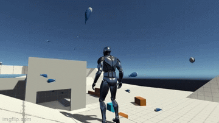
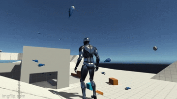

MARIO LEON

Hola gracias por leer esto!
Mi nombre es Mario,
soy programador y desarrollador de videojuegos desde 4º de la ESO
y siempre estoy buscando nuevas formas de mejorar y expandir mis conocimientos.
Mi nombre es Mario,
soy programador y desarrollador de videojuegos desde 4º de la ESO
y siempre estoy buscando nuevas formas de mejorar y expandir mis conocimientos.
TRACES IN THE DARK es un proyecto de final de curso que hice en el segundo año de Grado Superior.
Es juego de aventuras, plataformas y puzles en 3D,
con un movimiento lateral al estilo de los juegos 2d,
donde la pequeña protagonista (un hongo) despierta en su pueblo, pero ¿dónde están todos?
Parecen haber desaparecido, avanzan entre la oscuridad y los acertijos
para descubrir la verdad que envuelve este mundo y las criaturas que viven en él.
EL JUEGO ACTUALMENTE NO ESTA DISPONIBLE EN NINGUN SITIO DE FORMA PUBLICA,
pero si te interesa puedes descargarlo desde este enlace:
Descarga
Es juego de aventuras, plataformas y puzles en 3D,
con un movimiento lateral al estilo de los juegos 2d,
donde la pequeña protagonista (un hongo) despierta en su pueblo, pero ¿dónde están todos?
Parecen haber desaparecido, avanzan entre la oscuridad y los acertijos
para descubrir la verdad que envuelve este mundo y las criaturas que viven en él.
EL JUEGO ACTUALMENTE NO ESTA DISPONIBLE EN NINGUN SITIO DE FORMA PUBLICA,
pero si te interesa puedes descargarlo desde este enlace:
Descarga

 


Abajo encontraras las habilidades que tengo!
Lenguajes de Programcion
Herramientas
Motores de Juegos
Lenguajes